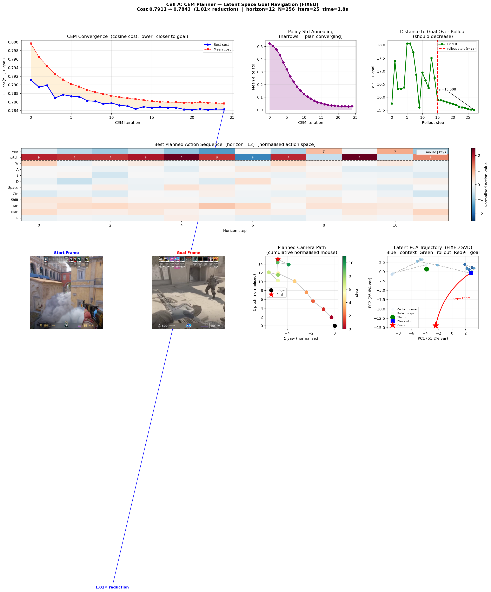

Overview
The model predicts future latent states conditioned on inferred actions, without labels or direct game state access. Representations remain stable under SIGReg and preserve actionable structure for nearest-neighbor retrieval, trajectory rollout, and decoder-based visualization.
Visual Results
Selected outputs from validation and analysis workflows.



Method Snapshot
Pipeline summary: 224x224 frame extraction at 10 fps, pseudo-action estimation from optical flow, ViT encoder with BN projection to latent space, autoregressive predictor with action conditioning, and optional decoder trained with perceptual plus adversarial losses.
How To Run
Core commands for smoke, train, and evaluation stages:
Full project source and updates live at github.com/fanXvirat/lewm-cs2.
Current Limitations
- Null-ratio gains are positive but still modest for long-horizon control.
- Pseudo-actions are heuristic approximations, not direct keyboard and mouse logs.
- Decoder quality can improve with more epochs and larger capacity.
- The planner is validated in latent space, not yet connected to live CS2 input execution.